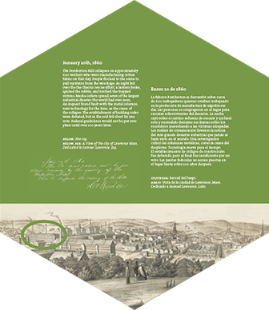
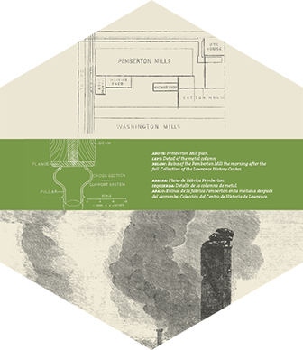
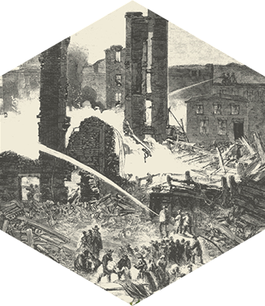

Introduction
Standing at the honeycomb Path sign outside the Everett Mill, you’ll meet your guide, Janet. She’ll introduce you to the city and to Catherine and Ellen Hannon, two sisters who were working in the Pemberton Mill when it collapsed in 1860.
Everett Mill
The Mill Floor
The Lawrence History Center
Pemberton Mill

Aftermath
Visitor's Center
Standing at the honeycomb Path sign outside the EverettMill, you’ll meet your guide, Janet. She’ll introduce you to the city and to Catherine and Ellen Hannon, two sisters who were working in the Pemberton Mill when it collapsed in 1860.